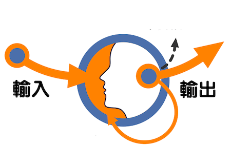

零末觸點 ❛AtMAny touched Moments連接 L.INK.ING...
開發技術：❝ Bun｜Deno（TypeScript）❝ Lit Web組件，CSS: 層疊樣式表，…❝ Zig，Golang，WASM，Flutter，…
可視探索：❝ 數據驅動圖形 D3❝ 場景渲染 THREE.JS + 粒子特效 GIST❝ 三維模型 OpenSCAD
交互元素：❝ Glow-Sans 未來熒黑❝ Bootstrap Icons